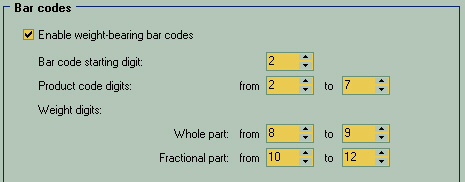

Weight-bearing barcodes can be extremely useful when you sell a big piles of some products repacked into smaller ones. There you can place on each package a barcode that can contain not only the identification of the product inside, but also the weight of this particular package, so the final pricing can be flexible, depending on the amount of stuff in the box.
Since the barcodes came in various standards and so different number of digits, you here define the exact marking style of which your barcode equipment is able to handle.
| • | Bar code starting digit - As it says: the first digit of your custom barcode information. |
| • | Product code digits - defines which ones is encoding the your internal product ID |
| • | Weight digits: Whole and Fractional - set how much precision do you want to see here. More fractional precision is making sense when you sell, say, golden dust or PU237. |
|